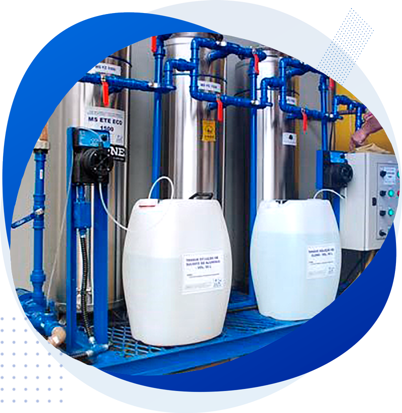

Sua captação de água subterrânea com a segurança que a lei exige.

A Dias & Kanzler conta com experiência de mais de 15 anos na regularização, tratamento e monitoramento da qualidade de poços.
Desde o ano 2000 atendemos as empresas de perfuração e usuários de poços em geral, desenvolvendo processos de regularização da atividade de captação de água subterrânea conforme a legislação vigente no estado de Santa Catarina.
Trabalhamos sempre com o intuito de garantir que os recursos financeiros estão sendo despendidos de forma a alcançar o objetivo proposto sem a necessidade de retrabalho e otimizando o tempo de obtenção das outorgas.
Nossa experiência e compromisso fazem a diferença na gestão dos seus recursos hídricos.
Processos de regularização de captação de água subterrânea conforme legislação vigente em Santa Catarina, sem retrabalho.
Profissional técnica em química capacitada com equipamentos digitais para medição in loco de parâmetros da água.
Otimizamos o tempo de obtenção das outorgas, garantindo eficiência e reduzindo custos para nossos clientes.
Da regularização ao monitoramento, oferecemos tudo que você precisa para a gestão de poços.
Regularização da captação de água subterrânea conforme a legislação vigente em Santa Catarina, com processos ágeis e sem retrabalho.
Medição in loco de ferro total, residual de cloro, pH e coleta para análise laboratorial da qualidade da água.
Soluções de tratamento da água para adequação aos padrões de potabilidade e requisitos legais.